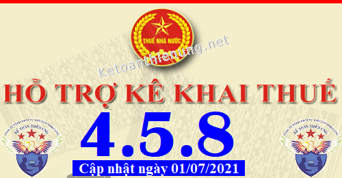
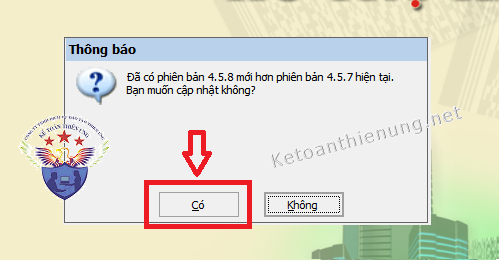
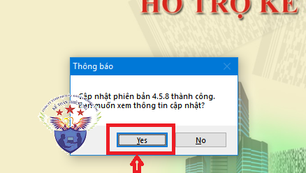

Phần mềm hỗ trợ kê khai thuế HTKK 4.5.8 mới nhất 2021 là Phần mềm HTKK 4.5.8 mới nhất ngày 01/07/2021 của Tổng cục thuế. Download phần mềm HTKK 4.5.8 miễn phí tại đây.
Ngày 01/07/2021 Tổng cục Thuế thông báo về việc Nâng cấp ứng dụng Hỗ trợ kê khai (HTKK) 4.5.8
TỔNG CỤC THUẾ THÔNG BÁO
V/v Nâng cấp ứng dụng Hỗ trợ kê khai (HTKK) phiên bản 4.5.8 cập nhật địa bàn hành chính trực thuộc các tỉnh Hà Tĩnh, Thanh Hóa, Đồng Nai, Tuyên Quang, Thừa Thiên Huế
Tổng cục Thuế thông báo nâng cấp ứng dụng Hỗ trợ kê khai (HTKK) phiên bản 4.5.8 cập nhật địa bàn hành chính trực thuộc các tỉnh Hà Tĩnh, Thanh Hóa, Đồng Nai, Tuyên Quang, Thừa Thiên Huế đáp ứng Nghị quyết số 819/NQ-UBTVQH14 ngày 21/11/2019, Nghị quyết số 1260/NQ-UBTVQH14, Nghị quyết số 1261/NQ-UBTVQH14, Nghị quyết số 1262/NQ-UBTVQH14, Nghị quyết số 1264/NQ-UBTVQH14 ngày 27/04/2021 đồng thời cập nhật một số nội dung phát sinh trong quá trình triển khai ứng dụng HTKK 4.5.7, cụ thể như sau:
1.1. Đổi tên địa bàn hành chính trực thuộc tỉnh Hà Tĩnh đáp ứng Nghị quyết số 819/NQ-UBTVQH14
- Đổi tên “Xã Anh Dũng” thành “Xã An Dũng, huyện Đức Thọ, tỉnh Hà Tĩnh”
1.2. Cập nhật địa bàn hành chính trực thuộc tỉnh Thanh Hóa đáp ứng Nghị quyết số 1260/NQ-UBTVQH14
- Cập nhật “Xã Qúy Lộc” thành “Thị trấn Qúy Lộc, huyện Yên Định, tỉnh Thanh Hóa”
- Cập nhật “Xã Yên Lâm” thành “Thị trấn Yên Lâm, huyện Yên Định, tỉnh Thanh Hóa”
1.3. Cập nhật địa bàn hành chính trực thuộc tỉnh Đồng Nai đáp ứng Nghị quyết số 1261/NQ-UBTVQH14
- Cập nhật “Xã Long Giao” thành “Thị trấn Long Giao, huyện Cẩm Mỹ, tỉnh Đồng Nai”
1.4. Cập nhật địa bàn hành chính trực thuộc tỉnh Tuyên Quang đáp ứng Nghị quyết số 1262/NQ-UBTVQH14
- Cập nhật “Xã Phúc Sơn, Huyện Chiêm Hoá” thành “Xã Phúc Sơn, huyện Lâm Bình, tỉnh Tuyên Quang”
- Cập nhật “Xã Minh Quang, Huyện Chiêm Hoá” thành “Xã Minh Quang, huyện Lâm Bình, tỉnh Tuyên Quang”
- Cập nhật “Xã Lăng Can” thành “Thị trấn Lăng Can, huyện Lâm Bình, tỉnh Tuyên Quang”
- Cập nhật “Xã Thắng Quân” thành “Thị trấn Yên Sơn, huyện Yên Sơn, tỉnh Tuyên Quang”
1.5. Cập nhật địa bàn hành chính trực thuộc tỉnh Thừa Thiên Huế đáp ứng Nghị quyết số 1264/NQ-UBTVQH14
- Cập nhật “Phường Phú Cát và Phường Phú Hiệp” thành “Phường Gia Hội, Thành phố Huế, tỉnh Thừa Thiên Huế”
- Cập nhật “Phường Phú Bình” vào “Phường Thuận Lộc, Thành phố Huế, tỉnh Thừa Thiên Huế”
- Cập nhật “Phường Phú Hòa và Phường Thuận Thành” thành “Phường Đông Ba, Thành phố Huế, tỉnh Thừa Thiên Huế”
- Cập nhật “Phường Phú Thuận” vào “Phường Tây Lộc và Phường Thuận Hòa, Thành phố Huế, tỉnh Thừa Thiên Huế”
- Cập nhật “Xã Thủy Vân, Thị xã Hương Thủy” thành “Phường Thủy Vân, Thành phố Huế, tỉnh Thừa Thiên Huế”
- Cập nhật “Xã Thủy Bằng, Thị xã Hương Thủy” thành “Xã Thủy Bằng, Thành phố Huế, tỉnh Thừa Thiên Huế”
- Cập nhật “Phường Hương Hồ, Thị xã Hương Trà” thành “Phường Hương Hồ, Thành phố Huế, tỉnh Thừa Thiên Huế”
- Cập nhật “Phường Hương An, Thị xã Hương Trà” thành “Phường Hương An, Thành phố Huế, tỉnh Thừa Thiên Huế”
- Cập nhật “Xã Hương Thọ, Thị xã Hương Trà” thành “Xã Hương Thọ, Thành phố Huế, tỉnh Thừa Thiên Huế”
- Cập nhật “Xã Hương Phong, Thị xã Hương Trà” thành “Xã Hương Phong, Thành phố Huế, tỉnh Thừa Thiên Huế”
- Cập nhật “Xã Hương Vinh, Thị xã Hương Trà” thành “Phường Hương Vinh, Thành phố Huế, tỉnh Thừa Thiên Huế”
- Cập nhật “Xã Hải Dương, Thị xã Hương Trà” thành “Xã Hải Dương, Thành phố Huế, tỉnh Thừa Thiên Huế”
- Cập nhật “Xã Phú Thượng, huyện Phú Vang” thành “Phường Phú Thượng, Thành phố Huế, tỉnh Thừa Thiên Huế”
- Cập nhật “Xã Phú Dương, huyện Phú Vang” thành “Xã Phú Dương, Thành phố Huế, tỉnh Thừa Thiên Huế”
- Cập nhật “Xã Phú Mậu, huyện Phú Vang” thành “Xã Phú Mậu, Thành phố Huế, tỉnh Thừa Thiên Huế”
- Cập nhật “Xã Phú Thanh, huyện Phú Vang” thành “Xã Phú Thanh, Thành phố Huế, tỉnh Thừa Thiên Huế”
- Cập nhật “Thị trấn Thuận An, huyện Phú Vang” thành “Phường Thuận An, Thành phố Huế, tỉnh Thừa Thiên Huế”
2. Cập nhật tờ khai quyết toán lợi nhuận sau thuế còn lại sau khi trích lập các quỹ phải nộp ngân sách nhà nước của doanh nghiệp do nhà nước nắm giữ 100% vốn điều lệ (01/QT-LNCL)
- Cập nhật bổ sung ràng buộc chỉ tiêu [M1] trên tờ khai: Bắt buộc nhập “Từ ngày”, “Đến ngày” nếu chỉ tiêu [M2] khác 0 hoặc số ngày chậm nộp trên chỉ tiêu [M1] khác 0.
------------------------------------------------------------------------
Bắt đầu từ ngày 01/07/2021, khi lập hồ sơ khai thuế có liên quan đến nội dung nâng cấp nêu trên, tổ chức, cá nhân nộp thuế sẽ sử dụng các chức năng kê khai tại ứng dụng HTKK 4.5.8 thay cho các phiên bản trước đây.

----------------------------------------------------------------------------
Download Phần mềm HTKK 4.5.8 tại đây:

Để cài đặt được HTKK 4.5.8, máy tính của NNT cần đáp ứng thông số sau:
- Hệ điều hành WinXP (SP2, SP3), Win 7 trở lên… (không hỗ trợ hệ điều hành iOS, Mac).
- Máy tính có cài .NET Framework 3.5 trở lên (có thể tải bộ cài .NET Framework 3.5 tại đây).
- Nếu máy tính sử dụng hệ điều hành Win 7 trở lên không phải cài đặt .NET Framework 3.5 mà chỉ cần kích hoạt .NET Framework 3.5 đã tích hợp sẵn theo tài liệu hướng dẫn cài đặt tại đây
- Hệ điều hành WinXP (SP2, SP3), Win 7 trở lên… (không hỗ trợ hệ điều hành iOS, Mac).
- Máy tính có cài .NET Framework 3.5 trở lên (có thể tải bộ cài .NET Framework 3.5 tại đây).
- Nếu máy tính sử dụng hệ điều hành Win 7 trở lên không phải cài đặt .NET Framework 3.5 mà chỉ cần kích hoạt .NET Framework 3.5 đã tích hợp sẵn theo tài liệu hướng dẫn cài đặt tại đây
-----------------------------------------------------------------------------------------------
- Mọi phản ánh, góp ý của tổ chức, cá nhân nộp thuế được gửi đến cơ quan Thuế theo các số điện thoại, hộp thư điện tử hỗ trợ NNT về ứng dụng HTKK do cơ quan Thuế cung cấp.
Tổng cục Thuế trân trọng thông báo./.
-----------------------------------------------------------------------
Trường hợp: Máy tính các bạn đã cài phần mềm HTKK 4.5.7 rồi -> Các bạn chỉ cần Bật phần mềm HTKK 4.5.7 đó lên -> Phần mềm sẽ hiển thị Thông báo cập nhật lên Phần mềm HTKK 4.5.8 -> Các bạn bấm nút "Có"

-> Tiếp đó đợi phần mềm chạy cập nhật là xong nhé:

Như vậy là các bạn đã nâng cấp xong Phần mềm HTKK 4.5.8 nhé
------------------------------------------------------------------------